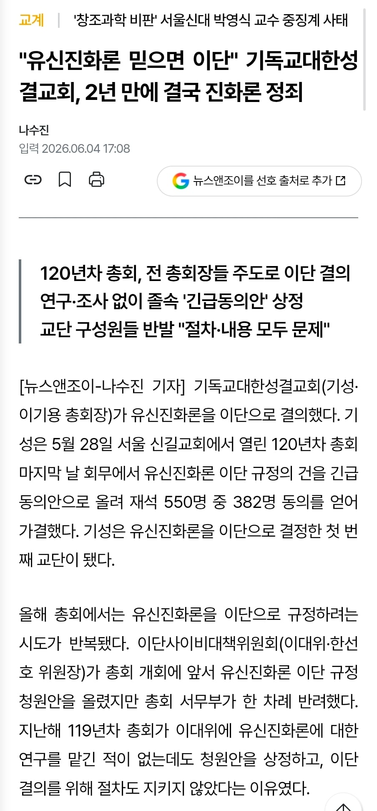
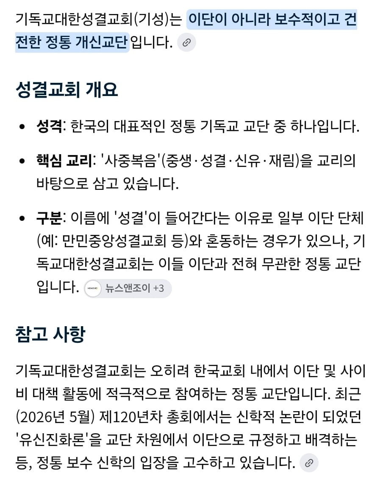

걔네들에 따르면 진화론도 이단임
신은 있고 진화도 되었다라고 주장해도 이단임 ㅋ

그리고 기독교대한성결교회는 정통 개신교단임

걔네들에 따르면 진화론도 이단임
신은 있고 진화도 되었다라고 주장해도 이단임 ㅋ

그리고 기독교대한성결교회는 정통 개신교단임
유대교: 아 진짜요?
조로아스터교: (뺴꼼)
기독교글 올리는 새끼의 절반은 이새끼네 병신
신천지 판별 탬플릿 끝까지 못올리던 분이던데 계속 종교 관련 글은 올리시네?
기독교 욕하는 것도 종종 해야 재밌지 맨날 왜 이러는교
신천지라
34렙쉑 빠져가지고
어차피 천주교입장에선 너희 다 이단이야...ㅋㅋㅋㅋㅋ